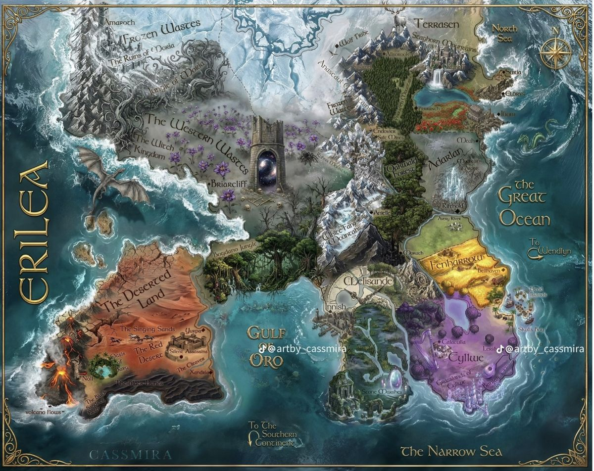
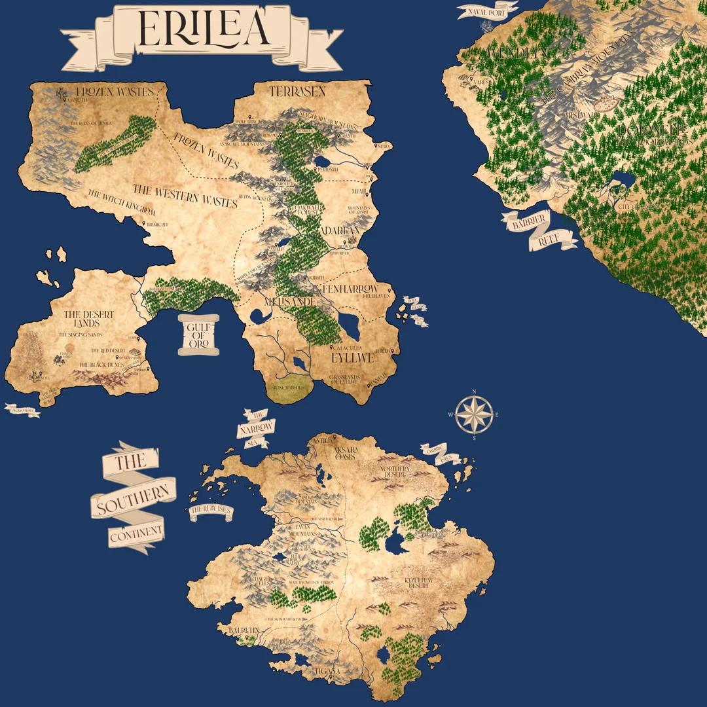
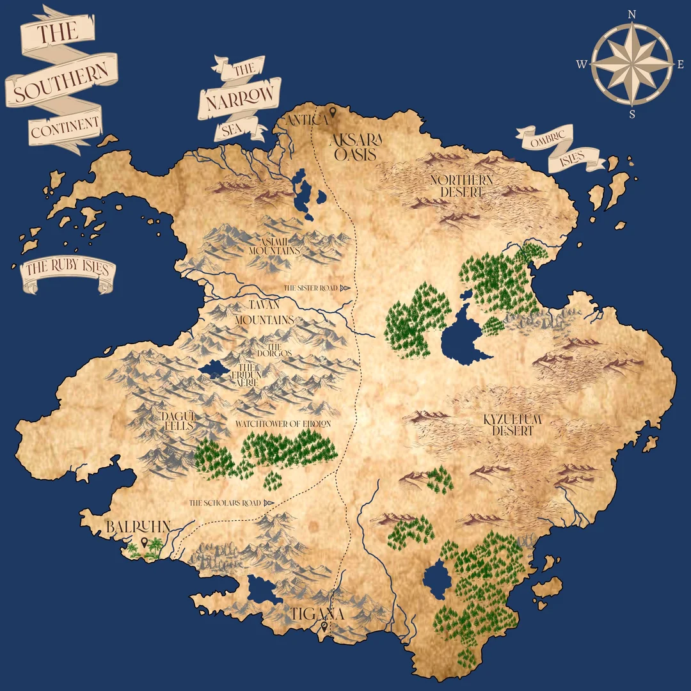
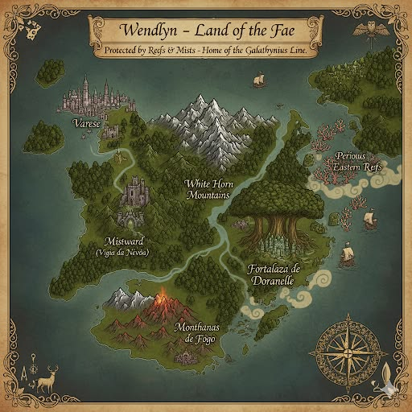
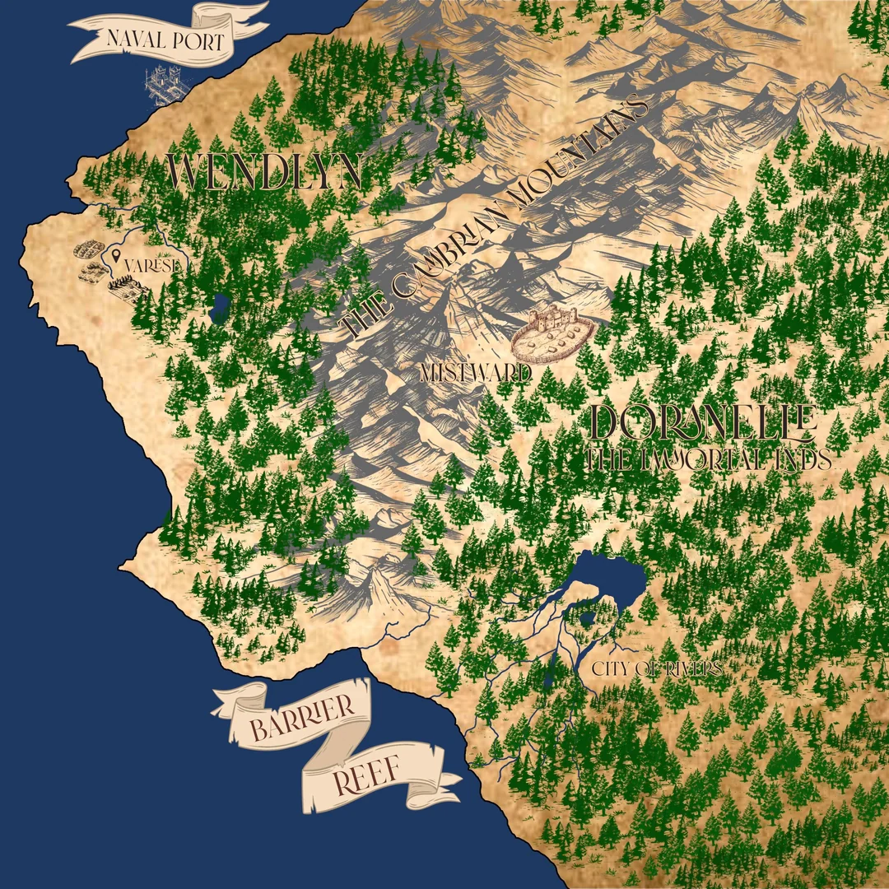
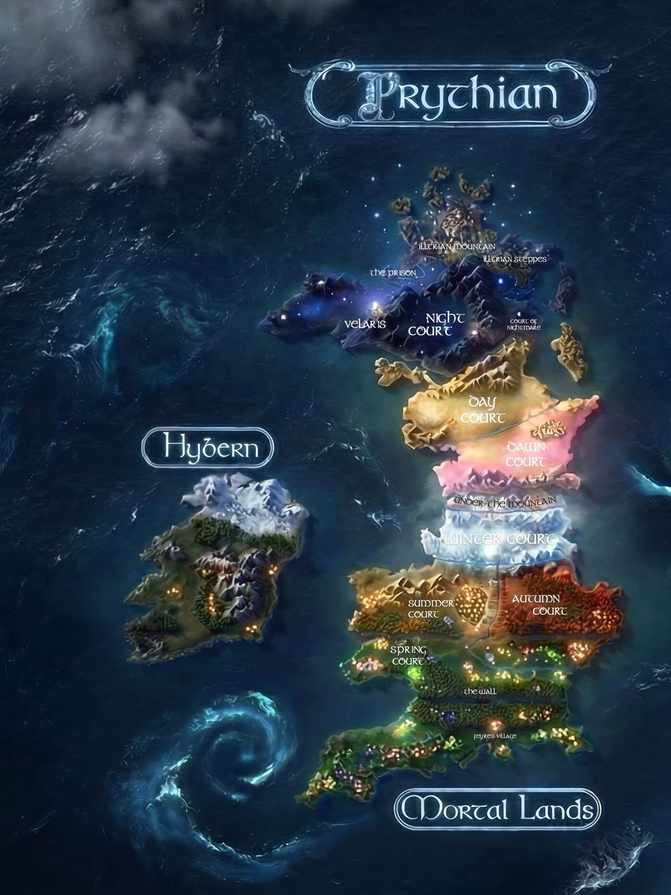

An illustrated, spoiler-free guide for Audrey & friends — how to read the series, where everything is, and who's who, with none of the surprises ruined.
Eight volumes, three ways to read them. New to the series? Take the recommended path — it's the one this whole guide is built around.
Everything here is safe once you've started Book One. Character and world entries only describe what's revealed early on — we never hint at who anyone becomes or how things turn out. Tip: avoid searching character names online; even the wiki spoils fast.
Our pick. You fall for the characters first, then their backstory hits harder — and you read the two parallel books the clever way.
Dragged from a death-camp and handed one impossible shot at freedom: survive a deadly competition inside the King's glass castle. This is where everything begins.
The contest is behind her — but the most dangerous game now is trust. Loyalties tighten and long-buried secrets begin to stir.
Five short tales set before Book One — the missions, friendships and hard choices that shaped our heroine. Sarah J. Maas herself suggests reading them right here, once you already love the characters.
The story breaks far beyond the castle walls, as the wider world — and much older powers — come into view.
Long-laid plans finally collide. Debts come due, and the board is swept clean.
These two books happen at the exact same time, in different lands, following different people. Reading them braided together keeps the timeline in sync and avoids a brutal cliffhanger. See the chapter-by-chapter tandem order →
Every thread the series has spun is pulled tight for one last reckoning. The end.
The strict story timeline — the prequel first. Great for purists, though it opens the series on a character you don't know yet.
The order the books were released, year by year.
Empire of Storms and Tower of Dawn unfold side by side. Here's how to weave them together.
A “tandem read” simply means reading both books at once, switching back and forth at planned points. The events happen concurrently in different places, so this keeps the whole story in step — and it's honestly more fun.
Empire of Storms ends on a huge cliffhanger. Tower of Dawn then follows a different cast elsewhere. Braiding them keeps the momentum and the timeline intact.
It looks like a side-quest. It isn't. It sets up characters and stakes you'll badly want in place before the finale.
Use two bookmarks — one parked in each book — or sticky tabs at every switch point. Switching then takes seconds.
The continent the whole story unfolds across. Switch between four artists' takes, or tap any map to see it full-size.

Beyond Erilea lie the lands across the seas — drawn here in one matching style.

Erilea and the Southern Continent together, across the Great Ocean and the Narrow Sea.

The vast land to the south, home of the great city of Antica. Its story grows later on.

The island kingdom across the Great Ocean, ringed by reefs and mist.

A closer look at Wendlyn's deep forests and the ancient city of Doranelle.
Tip: tap any map to open it full-screen.
The ancient Oakwald forest splits the continent into eastern and western lands. Here are the places you'll hear about most — all safe to read before Book One.
The conquering power, and the setting of Book One. Its capital, Rifthold, sits on the Avery River and is crowned by the King's Glass Castle.
A northern kingdom once celebrated for its deep ties to magic. Its capital is Orynth; its second city, Perranth.
A southern kingdom under Adarlan's rule, home to Princess Nehemia and her people.
Neighbouring southern realms of plains and farmland, also brought under the King's control.
The harsh western reaches of Erilea — home to ancient, feared clans of witches.
An island kingdom to the east, untouched by Adarlan's conquest. A land of the Fae, ringed by reefs and mists.
A vast land across the southern sea, with the great city of Antica at its heart. Its importance grows later on.
The immense, age-old forest running down the spine of the continent, dividing the eastern and western lands.
Just enough to keep names straight in Book One — nothing about who they become. Many more join the story as you go.
Erilea's most feared assassin, captured and condemned to the Endovier salt mines. Eighteen, orphaned at eight, and originally from Terrasen. A friendly warning: don't search her name online — it leads straight to series-wide spoilers.
The King's elder son and heir to the throne, nineteen years old. Quick-witted, well-read, and far kinder than his father.
Dorian's closest friend and the King's twenty-two-year-old Captain of the Guard. Dutiful and disciplined; born in the mountain city of Anielle.
The most powerful man in Erilea. Ten years before the story he conquered the eastern kingdoms and banished magic. He is never named — known only by his house, Havilliard.
Heir of the conquered kingdom of Eyllwe, sent to Rifthold to learn northern customs. Clever, principled, and fiercely loyal to her people.
The King's oldest ally and most trusted advisor, and the Duke of Morath, a city in the south of Adarlan.
Not royalty, but a power in Rifthold all the same — master of Erilea's deadliest assassins' guild, and the man who raised Celaena after she was orphaned.
Gavin was the first King of Adarlan; Elena, a half-Fae princess of Terrasen, his queen. Their ancient story echoes quietly through the series.
The terms that come up early and often, explained without giving anything away.
Each friend gets their own profile, saved on their device. Switch readers any time, and share a link to carry your progress to another phone.
A different series, a different world — by the same author.
Two of the maps in this guide — Prythian and Velaris — belong to A Court of Thorns and Roses (ACOTAR), not Throne of Glass. It's a separate series by Sarah J. Maas, set in the world of Prythian rather than Erilea. The two stories stand completely on their own — read each in its own order.
Fans affectionately call Maas's combined works the “Maasverse” (Throne of Glass, ACOTAR, and Crescent City), but you never need one series to enjoy another. This section is here simply because the ACOTAR maps came along for the ride.
A sixth book is expected in October 2026, and a seventh in 2027.
The series follows Feyre, a young mortal huntress, after she is drawn into the dangerous and beautiful land of the Fae. Prythian is divided into seven Courts — Spring, Summer, Autumn, Winter, Dawn, Day and Night — with the human mortal lands to the south, split off by an ancient wall. The hostile kingdom of Hybern lies on its own island.

The faerie realm and its seven Courts, with the mortal lands beyond the wall.
A luminous city within the Night Court — best discovered through the books themselves.